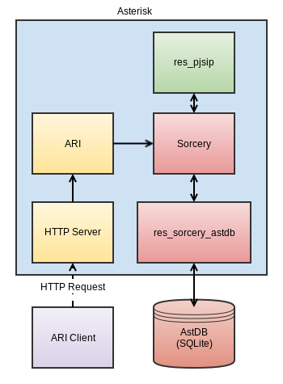

Overview¶
Asterisk typically retrieves its configuration information by pulling it from some configuration source - whether that be a static configuration file or a relational database. This page describes an alternative way to provide configuration information to Asterisk using a push model through ARI. Note that only modules whose configuration is managed by the Sorcery data abstraction framework in Asterisk can make use of this mechanism. Predominately, this implies configuration of the PJSIP stack.
On This PageVersion Information
Note
This feature was introduced in ARI version 1.8.0, or Asterisk 13.5.0 or later.
Push Configuration Workflow¶

With push configuration, an external process uses ARI to perform a configuration operation. The configuration operation could be any one of the four classic operations for persistent storage - Create, Retrieve, Update, or Delete. For the purposes of this workflow, we'll assume that the operation is to create a configuration change in Asterisk.
The ARI client makes a PUT request, where the body contains the configuration object to create, encoded in JSON. This is first handled by ARI, which performs basic validation on the inbound request and its contents. Once the request is validated, ARI asks the Sorcery framework to create the actual object.
Sorcery requires three pieces of information, at a minimum, to create an object:
- The overall class of configuration types. This is usually a module or namespace that provides multiple types of objects to be created, e.g., 'res_pjsip'.
- The type of configuration object to create, e.g., 'endpoint'.
- A unique identifier (amongst objects of the same type) for the object, e.g., 'alice'.
Once Sorcery has determined that it knows how to create the type of object, it creates it using the provided data in the JSON body. If some piece of data in the body can't be converted to an attribute on the object, the inbound request is rejected.
If the object is created successfully, Sorcery then has to determine what to do with it. While we've just had a piece of configuration pushed to Asterisk, Sorcery is responsible for storing it in some permanent - or semi-permanent - storage. For this, it looks to its configuration in sorcery.conf. We'll assume that our object should be created in the AstDB, a SQLite database. In that case, Asterisk pushes the newly created object to res_sorcery_astdb, which is the Sorcery driver for the AstDB. This module then writes the information to the SQLite database.
When the PJSIP stack next needs the object - such as when an INVITE request is received that maps to Alice's endpoint - it queries Sorcery for the object. At this point, from Sorcery's perspective, the retrieval of the configuration information is exactly the same as if a static configuration file or a relational database was providing the information, and it returns the pushed configuration information.
Asterisk Configuration¶
To make use of push configuration, you must configure Sorcery to persist the pushed configuration somewhere. If you don't want the information to persist beyond reloads, you can use the in-memory Sorcery driver, res_sorcery_memory. The example below assumes that we will push configuration to the PJSIP stack, and that we want information to persist even if Asterisk is restarted. For that reason, we'll use the AstDB.
sorcery.conf
truetext[res_pjsip]
endpoint=astdb,ps_endpoints
auth=astdb,ps_auths
aor=astdb,ps_aors
domain_alias=astdb,ps_domain_aliases
contact=astdb,ps_contacts
system=astdb,ps_systems
[res_pjsip_endpoint_identifier_ip]
identify=astdb,ps_endpoint_id_ips
[res_pjsip_outbound_registration]
registration=astdb,ps_registrations
Warning
You must configure sorcery.conf for this feature to work. The standard data provider Sorcery uses for PJSIP objects is the static configuration file driver. This driver does not support creation, updating, or deletion of objects - which means only the GET request will succeed. Any of the following drivers will work to support push configuration:
res_sorcery_memoryres_sorcery_astdbres_sorcery_realtime
Pushing PJSIP Configuration¶
This walk-through will show how we can use the asterisk resource in ARI to push a PJSIP endpoint into the AstDB, and then later remove the endpoint.
Original PJSIP Configuration¶
Assume we have the following static PJSIP configuration file that defines an endpoint for Alice:
pjsip.conf
truetext[transport-udp]
type=transport
protocol=udp
bind=0.0.0.0:5060
[transport-tcp]
type=transport
protocol=tcp
bind=0.0.0.0:5060
[alice]
type=aor
support_path=yes
remove_existing=yes
max_contacts=1
[alice]
type=auth
auth_type=userpass
username=alice
password=secret
[alice]
type=endpoint
from_user=alice
allow=!all,g722,ulaw,alaw
ice_support=yes
force_rport=yes
rewrite_contact=yes
rtp_symmetric=yes
context=default
auth=alice
aors=alice
If we then ask Asterisk what endpoints we have, it will show us something like the following:
Asterisk CLI
\*CLI> pjsip show endpoints
Endpoint: <Endpoint/CID.....................................> <State.....> <Channels.>
I/OAuth: <AuthId/UserName...........................................................>
Aor: <Aor............................................> <MaxContact>
Contact: <Aor/ContactUri...............................> <Status....> <RTT(ms)..>
Transport: <TransportId........> <Type> <cos> <tos> <BindAddress..................>
Identify: <Identify/Endpoint.........................................................>
Match: <ip/cidr.........................>
Channel: <ChannelId......................................> <State.....> <Time(sec)>
Exten: <DialedExten...........> CLCID: <ConnectedLineCID.......>
=========================================================================================
Endpoint: alice Unavailable 0 of inf
InAuth: alice/alice
Aor: alice 1
\*CLI>
Our goal is to recreate alice, using ARI.
New Configuration¶
PJSIP¶
Remove Alice from pjsip.conf:
pjsip.conf
truetext[transport-udp]
type=transport
protocol=udp
bind=0.0.0.0:5060
[transport-tcp]
type=transport
protocol=tcp
bind=0.0.0.0:5060
Sorcery¶
Tell the Sorcery data abstraction framework to pull endpoint, aor, and auth objects from the Asterisk Database:
sorcery.conf
Asterisk CLI¶
Now, if we ask Asterisk for the PJSIP endpoints, it will tell us none are defined:
Asterisk CLI
Pushing Configuration¶
First, let's push in Alice's authentication:
We can note a few things from this:
- We supply the non-default values that make up Alice's authentication in the JSON body of the request. The body specifies the "fields" to update, which is a list of attributes to modify on the object we're creating.
- We don't have to provide default values for the object. This includes the "type" attribute - ARI is smart enough to figure out what that is from the request URI, where we specify that we are creating an "auth" object.
- When we've created the object successfully, ARI returns back all the attributes that make up that object as a list of attribute/value pairs - even the attributes we didn't specify.
Next, we can push in Alice's AoRs:
Finally, we can push in Alice's endpoint:
We can now verify that Alice's endpoint exists:
Asterisk CLI
text\*CLI> pjsip show endpoints
Endpoint: <Endpoint/CID.....................................> <State.....> <Channels.>
I/OAuth: <AuthId/UserName...........................................................>
Aor: <Aor............................................> <MaxContact>
Contact: <Aor/ContactUri...............................> <Status....> <RTT(ms)..>
Transport: <TransportId........> <Type> <cos> <tos> <BindAddress..................>
Identify: <Identify/Endpoint.........................................................>
Match: <ip/cidr.........................>
Channel: <ChannelId......................................> <State.....> <Time(sec)>
Exten: <DialedExten...........> CLCID: <ConnectedLineCID.......>
=========================================================================================
Endpoint: alice/unknown Invalid 0 of inf
InAuth: alice/alice
Aor: alice 1
!!! note Order Matters! While ARI itself won't care about the order you create objects in, PJSIP will. A PJSIP endpoint is used to look-up the endpoint's authentication and AoRs. Asterisk and ARI will let you create the endpoint first, referencing an authentication and AoR object that don't yet exist. If an inbound request arrives for that endpoint, the request will be rejected because the endpoint won't be able to find the authentication or store the Contact on a REGISTER request! By creating things in the order that we did, we can guarantee that everything will be in place when the endpoint is instantiated.
We can also verify that Alice exists in the AstDB:
Asterisk CLI
text\*CLI> database show
/ps_aors/aor/alice : {"qualify_frequency":"0","maximum_expiration":"7200","minimum_expiration":"60","qualify_timeout":"3.000000","support_path":"true","default_expiration":"3600","mailboxes":"","authenticate_qualify":"false","outbound_proxy":"","max_contacts":"1","remove_existing":"true"}
/ps_auths/auth/alice : {"realm":"","md5_cred":"","nonce_lifetime":"32","auth_type":"userpass","password":"secret","username":"alice"}
/ps_endpoints/endpoint/alice : {"send_diversion":"true","device_state_busy_at":"0","direct_media_method":"invite","sdp_owner":"-","pickup_group":"","timers_sess_expires":"1800","message_context":"","accountcode":"","dtls_fingerprint":"SHA-256","rpid_immediate":"false","force_avp":"false","aors":"alice","trust_id_inbound":"false","ice_support":"true","fax_detect":"false","outbound_proxy":"","t38_udptl_maxdatagram":"0","direct_media_glare_mitigation":"none","dtls_rekey":"0","context":"default","media_encryption_optimistic":"false","named_pickup_group":"","from_domain":"","mailboxes":"","sdp_session":"Asterisk","cos_video":"0","identify_by":"username","t38_udptl":"false","send_rpid":"false","rtp_engine":"asterisk","t38_udptl_ec":"none","dtls_verify":"No","aggregate_mwi":"true","moh_suggest":"default","media_encryption":"no","callerid":"<unknown>","named_call_group":"","record_on_feature":"automixmon","dtls_setup":"active","inband_progress":"false","timers_min_se":"90","tos_video":"0","rtp_symmetric":"true","rtp_ipv6":"false","transport":"","t38_udptl_nat":"false","connected_line_method":"invite","allow_transfer":"true","allow_subscribe":"true","srtp_tag_32":"false","g726_non_standard":"false","100rel":"yes","use_avpf":"false","call_group":"","moh_passthrough":"false","user_eq_phone":"false","allow":"(g722|ulaw|alaw)","sub_min_expiry":"0","force_rport":"true","direct_media":"true","dtmf_mode":"rfc4733","media_use_received_transport":"false","record_off_feature":"automixmon","language":"","mwi_from_user":"","one_touch_recording":"false","rewrite_contact":"true","cos_audio":"0","t38_udptl_ipv6":"false","trust_id_outbound":"false","tone_zone":"","auth":"alice","from_user":"alice","disable_direct_media_on_nat":"false","tos_audio":"0","use_ptime":"false","media_address":"","timers":"yes","send_pai":"false","callerid_privacy":"allowed_not_screened"}
3 results found.
\*CLI>
Deleting Configuration¶
If we no longer want Alice to have an endpoint, we can remove it and its related objects using the DELETE operation:
And we can confirm that Alice no longer exists:
Asterisk CLI
!!! note Order Matters! Note that we remove Alice in reverse order of how her endpoint was created - we first remove the endpoint, then its related objects. Once the endpoint is removed, further requests will no longer be serviced, which allows us to safely remove the auth and aor objects.